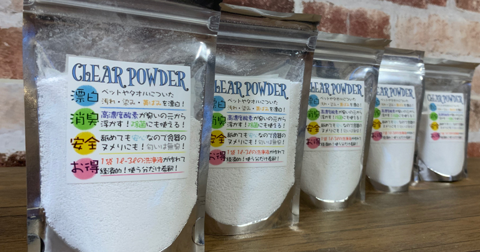

愛犬・愛猫の健康面にしましては多くの飼い主さまの健康面を向上していくことによって構成されています。
この点の思考を本気で改善していくのであれば、行動して改善していくのが大事になっております。
愛犬・愛猫の健康面を本気で思考していくのであれば大事な思考になっております。
健康面を本気で思考して改善していくのであれば、多くの飼い主さまは知識を向上していくのが大事になっております。
この点の思考を改善して行動して向上していくのであれば、飼い主さまの思考や意識の向上が必須になってきております。
多くの飼い主さまの思考としましては、ドラいうフードのみで健康面を簡潔することができるといった認識になっていることがとても多くなっております。
改善点を本気で考察していくのであれば、行動している内容を資格からみても感じることが大事になっております。
改善点を考察して行動していくのが飼い主さまとして大事になっております。
愛犬・愛猫の健康面に関しましては飼い主自身の思考や改善によって健康面を構成していくことができます。
本気で健康面を向上して改善していくのであれば本気で改善点を考察していくのであれば、行動して寛容に対策していくことが大事になっております。
愛犬・愛猫の健康面につきまして
愛犬・愛猫の健康面に関しましては多くの飼い主さまの手によって構成されています。この点に関しましては多くの飼い主さまの手によって構成されてきます。
健康面を本気思考していくのであれば飼い主さまとしては行動していくのが大事になってきております。
多くの飼い主さまが行動していくのに関しましては行動していくことで健康面に対する意識や行動ができるようになります。
しかしこの点の健康面を思考していくのであれば改善点を思考していけなくなるので、行動していくのが難しくなっております。
飼い主の行動によって健康面を思考していくのであれば健康面の思考に対しての行動が大事になってます。
ここの改善点を思考して行動していくのであれば、健康面は大きく思考していきます。
改善点としましては行動していくのが大事になっております。
愛犬・愛猫の健康面に関しましては多くの飼い主様の手によって構成していきます。
本気で健康面を思考して改善していくのであれば、多くの飼い主さまとしましては行動して改善していくことで健康面の改善と向上が発生していきます。
この点を飼い主さまが思考して行動していくのあれば、健康面にしましては向上していくことしかしません
愛犬・愛猫の健康面にしましては飼い主の思考錯誤のよって構成していきます。その点を飼い主さまが理解して改善していくことをしないのであれば、健康面の改善はありません
本気で思考作保して改善を目指すのであれば、行動して改善していくのが大事になっております。本気で思考錯誤していくのであれば、
改善点を考察して行動していくこと大事になっております。改善点を飼い主が思考して改善していくことができないのであれば、愛犬・愛猫の健康面としましては向上していきません。
本気で思考錯誤していくのであれば、健康面としましては向上していきます。
この点の思考がないのであれば、健康面は向上していきません。
本気で健康面を思考していくのであれば、、健康面を飼い主さまとしましては向上していくのが大事になっております。
愛犬・愛猫の健康面を思考錯誤していくのであれば、健康面を向上していくのが大事になっております。
飼い主として健康面を思考錯誤していくのであれば、愛犬・愛猫の状態を飼い主自身で判断していくことも大事になっております。
思考錯誤していくにしても何に対して思考錯誤していくのか？飼い主さまとしては健康面を考察していくことができません。
何を改善していいのかわからない状態になりますので。
この点を本気で思考していくのであれば、飼い主さまが改善していくぐらいの気持ちでいないのであれば、健康面を向上していくことが難しくなっております。
本気で健康面を向上していきたいのであれば、愛犬・愛猫の状態を観察していくのはもちろんですが、飼い主としての知識を向上していくことも大事になっております。
本気で健康面を思考錯誤して行動していくのであれば、飼い主さまとしましては健康面を思考して改善して向上していくのが大事になっております。
愛犬・愛猫の健康面を向上していくのであれば、飼い主としましては健康面を考察していくことが大事になっております。
飼い主としての思考としましては、健康面をどれぐらい向上していくのかを思考して行動していくのが大事になっております。
健康面の改善としましては飼い主自身の思考によって向上していきます。
この点の思考としましては飼い主の行動によって健康面は変化していきます。
健康面を向上していくのであれば、本気で健康面の考察していくのが大事になっております。
健康面を考察して健康面を向上していくのであれば、飼い主の行動を大事にしていく必要があります。
健康面を本気で考察していくのであれば、健康面を向上していくのが大事になっております。
本気で健康面を考察して改善していくのが飼い主自身の行動になっております。
健康面の改善としましては飼い主さまの思考や行動によって大きく健康面が変動していきます。
行動していくのであれば、飼い主さまの思考や意識も改善していくことができるのです。
本気で鼓動して改善していくのであれば、健康面は大きく向上していくことが可能になっております。
健康面の改善を思考していくのであれば、飼い主さまの思考としましては改善していくことが大事になっております！
本気で健康面を構築していくのであれば、飼い主さまの思考としましては改善点を考察していくことが大事になっております。
本気で健康面を考察して、健康面を向上していくことを思考していくのであれば、健康面を考察して改善していくことが大事になります。
飼い主さまの多くは他人に健康面を託しすぎているように感じます。
しかしそれでは健康面を向上していくことは難しくなっております。
本気で健康面を向上していくのであれば飼い主さまの思考が大事になっております。
愛犬・愛猫の健康面を考察していくのであれば、飼い主さまは愛犬・愛猫の健康面状態に関しましては考察していくことが大事になっております。
本気で健康面を考察して改善していく飼い主さまは改善点を考察して、それに向かって行動していきます。
大事な愛犬・愛猫の健康面になりますので。そねぐらいで改善点を考察していくのであれば、その点の行動を飼い主さまがしていくのは必然になるのかなと思いあm巣
健康面を本気で思考して改善していくのであれば、飼い主さまの行動が大臣なってきます。
しかし飼い主さまの知識や意識の向上が飼い主さまにないのであれば、健康面を向上していくことはできません。
健康面を考察していくのであれば、健康面を改善していくことが大事になっております。
本気で健康面を改善していいく飼い主さまなのであれば、行動によって健康面を向上していくことが可能になっております。
改善点を考察していくのが飼い主としての大事な部分になっております。
本気で健康面を考察していくのであれば、改善点を考察して行動していくことが大事になっております。
飼い主さまの思考が低いのであれば、健康面を向上していくことは難しくなっております。
改善点を考察していくのであれば、本気で考察していくことは大事になっております。
関しましては関しましては行動していくことで改善考察していくことができます。
本気で健康面を思考して改善していくことが難しいのであれば、飼い主さまの思考を改善していくことが難しくなっております。
健康面を思考錯誤して改善していくことが飼い主として大事なことになっております。
健康面を考察して改善していくのであれば、飼い主の行動にとって飼い主さまの思考や意識が改善していきます
行動していくことが飼い主様の行動によって健康面を向上していくことが可能になっております、
飼い主さまの行動が大事になっております。
面英力としましては改善していきます。


自社商品も展開

僕自身はペット用品にときめくことは滅多にありません。
だからこそコレだ！となった商品は自信を持ってお勧めできるのです★
Dog&Cat CLEARの自社商品『CLEAR POWDER』は消臭だけではなく汚れも落とす。
ここの部分は他の消臭用品にはない効力なので自信を持ってお勧めできる商品の１つです★
健康面の思考といしましては向上していくのが大事になっております、
行動していくのが飼い主さまの思考になっておりあす

CLEAR POWDERが初回限定でお得に！
Dog&Cat CLEAR代表
皆様 初めまして！Dog&Cat CLEARの亮佑です！
愛犬・愛猫の健康面は飼い主が守るをテーマに日々YouTubeなどで発信しております★
ペット業界の人間ではありますが、僕自身も猫18匹と犬2匹の飼い主でもあります。
常に我が子達の健康面に関することを思考しております★
そこで得たヒントを飼い主さまへお伝えしていければと思います。
愛犬・愛猫の健康面を思考する
愛犬・愛猫の健康面に関しましては多くの飼い主さまが気になっている部分にはなるのではないでしょうか？
ここの部分を向上していきたいのであれば、飼い主の知識や意識の向上に関しましても大事になっております。
しかし多くの飼い主さまが愛犬・愛猫の健康面に対して気になっているはずなのにも関わらず、飼い主さまの知識に関しましては大きく向上していかないことも多くなっております。

改善点を飼い主は思考する
多くの飼い主さまが思考している内容にはなりますので、健康面に関する内容を記載していきます。
健康面に対する思考としましては、飼い主自身が自分で、愛犬・愛猫の健康面を向上していくといった思考が大事になっております。
この点の改善点を思考していかないのであれば、健康面の向上は難しくなっております。
改善点を見つけるには？
しかし健康面を向上していくのに、どのようにそれを行なっていくのか理解できない飼い主さまも多くはなっているとは思います。
そこの部分に関しましては、愛犬・愛猫の健康面や、動きや思考に関してを観察して向上していくのが大事になっております。
健康面の向上に対しては飼い主の行動なくして起こるものではありません。
しかし飼い主の多くはここの改善点を思考していくが大事に感じていないのも大変残念な部分ではあります。
ここの改善点を思考していかないのであれば、健康面に対しては高くなっていくといったことは起こりません。
健康面を思考していくのであれば、ここの思考を飼い主は必ず持っていくのが大事になっております。
健康面の思考としましては行動して改善点を考察していくのが大事になっております。
健康面を向上していくといった飼い主の知識と意識の向上としましても健康面を思考していくには大事にはなっております。
愛犬・愛猫の健康面に関しましては多くの飼い主さまの手によって構成されております。
ここの部分に関しましては飼い主自身の思考や意識によって改善点を発見できます。
ここ部分をいかに改善点を見つけていくかが、健康面に関しましては大事な部分にはなっております。
健康面に対しての飼い主自身の行動としましては、
愛犬・愛猫の状態を菅申してい行動していくといったことを行なっていただく必要があります。
ここの部分の改善点を思考して改善点を発見できない飼い主なのであれば、愛犬・愛猫の健康面に関しましては大きく変化していきません。
何が愛犬・愛猫の体内にて影響を起こしているのかを理解していく必要があります。
この点の思考としましては飼い主さまの行動によって健康面は向上していきます。
ここを飼い主さまが思考して改善していくのであれば、健康面は大きく変化していきます。
本気で健康面を考察して改善していくのであれば、健康面にしましては改善していきます。
本気で健康面を思考して改善していくのであれば、ここの改善点を考察していくのが大事になっております。
多くの飼い主さまの思考としましては改善点を考察して改善していくことができません。
健康面を本気で思考して改善していくのであれば、改善点を思考錯誤していくのが大事になっております。
この点の選択指定いくのであれば、健康面を向上していくのが大事になっております。
ここの思考や改善点を飼い主自身が改善していくことができないのであれば、改善点を発揮できなくなってしまいます。
改善点を考察して改善点を発見して多くの愛犬・愛猫の健康面を考察していくのであれば、問題点が発生していきます。
この点を本気で思考して改善していくのであれば、飼い主さまんしましては行動して改善していくのが大事になっております。
しかし思考錯誤して行動していくことができないのであれば、愛犬・愛猫のの健康面としましては向上していきません。
愛犬・愛猫の健康面を思考錯誤して改善していくのが飼い主としての役目になっております。
その点を踏まえて飼い主になる選択をして欲しいです。
問題点としましては多くの飼い主さまが改善に向けて行動していくことができないということです。
この点の改善を飼い主自身で思考錯誤して行動していくことが難しいのであれば、愛犬・愛猫の健康面は向上していきません。
しかしこの改善点を考察して愛犬・愛猫の身体に合わせて対応できるのであれば、愛犬・愛猫の健康面としましては向上していきます。
本気で健康面を向上していくのであれば、愛犬・愛猫の健康は大きく向上していきます。
飼い主の本気で健康面を向上したいといった気持ちや想いがあるのであれば、この点の問題は解決していきます。
しかしその点の改善を飼い主が発見できないのであれば、愛犬・愛猫の健康面に対して何か問題点があったとしても飼い主が改善していくことができません。
飼い主としてそこの発見ができるのか？発見できるのか？ここの部分によっても健康面は大きく変化していきます。
この点を思考錯誤して行動して改善していくのであれば、この点を考察していくのが大事になっております。
飼い主さまとしましては行動を改善していくことが大事になっております。
しかし愛犬・愛猫の状態は日々変化していきます。
この点を思考すると健康面にしましても毎日変化していくので、その状態に合わせて改善していくことが大事になっております。
本気で思考錯誤して改善していくのであれば、飼い主として知識や意識の改善が必要になっております。
経験・資格
●ペット業界15年目
●手作りフード
●学校認可トリマーライセンス
●学校認可訓練士ライセンス
●Webサイト制作・分析・運用・保守
●Webコンサルティング
●PremierePro動画編集
●AIPA認定AI・ IoTコンサルタント
●SNSエキスパート
●中医学薬膳アドバイザー【取得中】
作業依頼はこちらまで★
mail : info@dogcat-clear.com
知識を愛犬・愛猫専用に
カスタマイズ
多くの飼い主さまが、得た知識をそのままの分量や、配合で使い続けることがとても多く感じます。
しかし、それはあくまでも平均値として良いと言われてる、提示されているだけになります。
ここを愛犬・愛猫専用に、微調節や配合を自身で行える飼い主を目指していきましょう！
それには合う、合わないといった単純な思考だけではなく、何が不足していることによって身体で対処できないのか？
こういった部分まで考えれる飼い主さまになりましょう。
この点の改善点としましては多くの飼い主さまの行動によって改善していきます。
改善点を思考錯誤して改善していくのであれば、行動して改善していくのが大事になっております。
しかし問題点を考察して改善していくことができるのであれば、思考錯誤していくことが問題になっております。
健康面の改善点を思考錯誤していくのであれば、飼い主としましては知識をつけて改善していくことが大事になっております。
この点を改善していくが大事になっております。
手作りご飯投稿メディア
皆のCLEAR飯！！
ドライフードの情報はとても多いのに対して、手作りご飯の情報はとても少ないです。
さらには手作りご飯よりもドライフードを推奨するサイトばかり・・・。
そんな飼い主さんの後押しとして、手作りご飯をしている飼い主さんの思考や、レシピだったりを投稿できたり、手作りご飯を学べる場所を作りたい！と思い、いぬ飯・ねこ飯・皆のCLEAR飯を立ち上げました☆